Change analysis for Luxembourg for PRIMAP-hist v2.6_final compared to
v2.5.1_final
Overview over
emissions by sector and gas
The following figures show the aggregate national total emissions
excluding LULUCF AR6GWP100 for the country reported priority scenario.
The dotted linesshow the v2.5.1_final data.
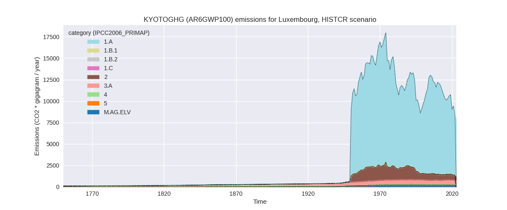
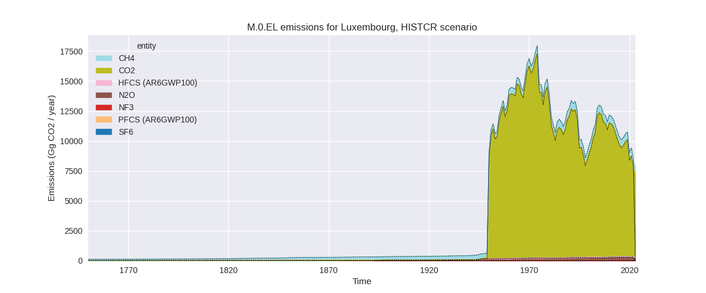
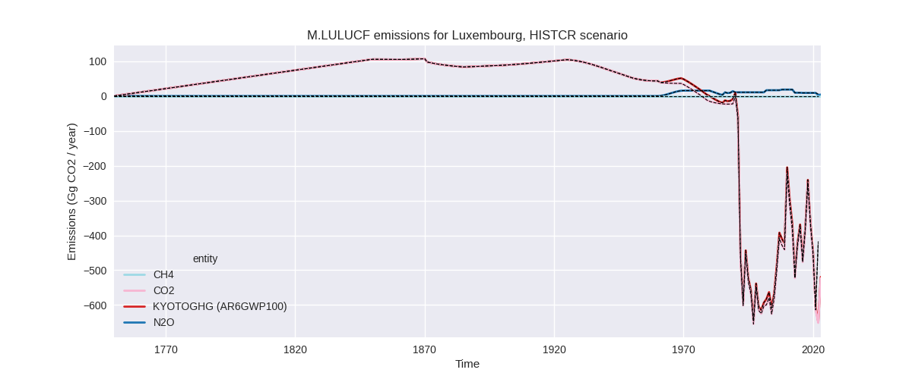
The following figures show the aggregate national total emissions
excluding LULUCF AR6GWP100 for the third party priority scenario. The
dotted linesshow the v2.5.1_final data.
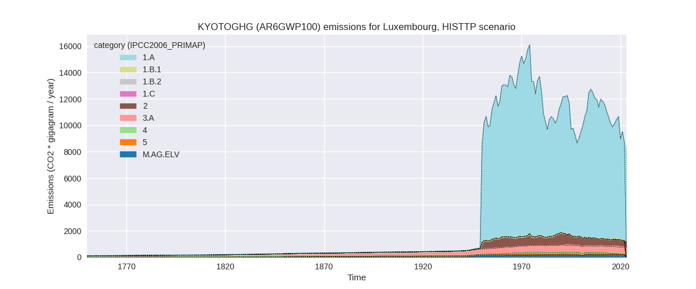
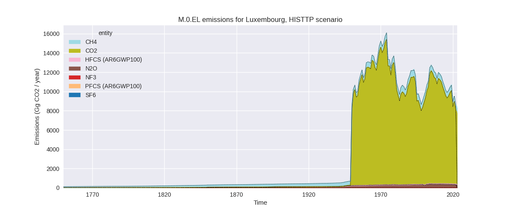
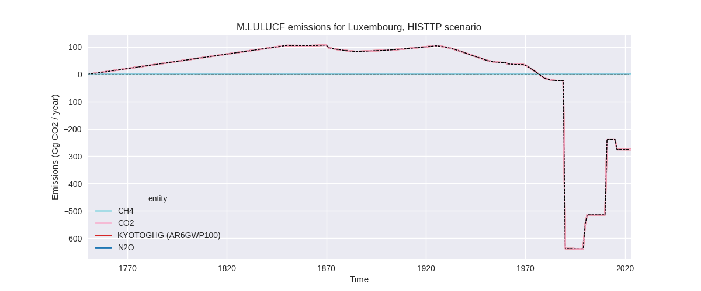
Overview over changes
In the country reported priority scenario we have the following
changes for aggregate Kyoto GHG and national total emissions excluding
LULUCF (M.0.EL):
- Emissions in 2022 have changed by -4.2%% (-361.87 Gg CO2 / year)
- Emissions in 1990-2022 have changed by -0.1%% (-11.73 Gg CO2 / year)
In the third party priority scenario we have the following changes
for aggregate Kyoto GHG and national total emissions excluding LULUCF
(M.0.EL):
- Emissions in 2022 have changed by -0.5%% (-45.53 Gg CO2 / year)
- Emissions in 1990-2022 have changed by 0.1%% (8.32 Gg CO2 / year)
Most
important changes per scenario and time frame
In the country reported priority scenario the
following sector-gas combinations have the highest absolute impact on
national total KyotoGHG (AR6GWP100) emissions in 2022
(top 5):
- 1: 1.A, CO2 with -305.52 Gg CO2 / year (-4.3%)
- 2: M.AG.ELV, N2O with -23.55 Gg CO2 / year (-16.6%)
- 3: 2, CO2 with -15.66 Gg CO2 / year (-3.2%)
- 4: 1.B.2, CH4 with -7.49 Gg CO2 / year (-22.2%)
- 5: M.AG.ELV, CO2 with -5.22 Gg CO2 / year (-34.0%)
In the country reported priority scenario the
following sector-gas combinations have the highest absolute impact on
national total KyotoGHG (AR6GWP100) emissions in
1990-2022 (top 5):
- 1: 1.A, CO2 with -12.13 Gg CO2 / year (-0.1%)
- 2: 3.A, CH4 with 3.31 Gg CO2 / year (0.7%)
- 3: 2, CO2 with -2.94 Gg CO2 / year (-0.4%)
- 4: M.AG.ELV, CO2 with -0.85 Gg CO2 / year (-9.3%)
- 5: M.AG.ELV, N2O with 0.64 Gg CO2 / year (0.4%)
In the third party priority scenario the following
sector-gas combinations have the highest absolute impact on national
total KyotoGHG (AR6GWP100) emissions in 2022 (top
5):
- 1: 1.A, CO2 with -80.62 Gg CO2 / year (-1.1%)
- 2: 2, CO2 with 18.30 Gg CO2 / year (4.2%)
- 3: 4, CH4 with 16.99 Gg CO2 / year (36.2%)
- 4: M.AG.ELV, CO2 with -5.22 Gg CO2 / year (-34.0%)
- 5: 4, N2O with 4.76 Gg CO2 / year (38.4%)
In the third party priority scenario the following
sector-gas combinations have the highest absolute impact on national
total KyotoGHG (AR6GWP100) emissions in 1990-2022 (top
5):
- 1: 4, CH4 with 10.18 Gg CO2 / year (9.9%)
- 2: 4, N2O with 3.81 Gg CO2 / year (37.0%)
- 3: 1.A, CO2 with -3.71 Gg CO2 / year (-0.0%)
- 4: 5, N2O with -1.21 Gg CO2 / year (-2.3%)
- 5: M.AG.ELV, CO2 with -0.85 Gg CO2 / year (-9.3%)
Notes on data changes
Here we list notes explaining important emissions changes for the
country. ’' means that the following text only applies to the TP time
series, while means that it only applies to the CR scenario. Otherwise
the note applies to both scenarios.
- We have included the EEA2024 data.
- Changes in 2022 come from the EEA data which differs from third
party growth rates (EI2023 for 1.A, FAO for M.AG.ELV).
- Agricultural CO2 emissions are lower in EEA2024 than in CRF2023 for
later years (mostly from liming).
- Changes in cumulative emissions in the CR scenario are generally
small.
- Changes in the TP time-series are similar.
- Changes in sectors 4 and 5 in the TP time-series are due to the
removal of FAOSTAT data.
Changes by sector and gas
For each scenario and time frame the changes are displayed for all
individual sectors and all individual gases. In the sector plot we use
aggregate Kyoto GHGs in AR6GWP100. In the gas plot we usenational total
emissions without LULUCF. ## country reported scenario
2022
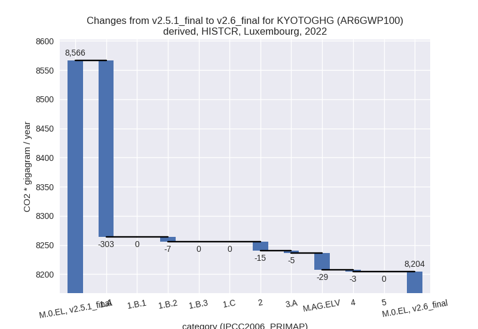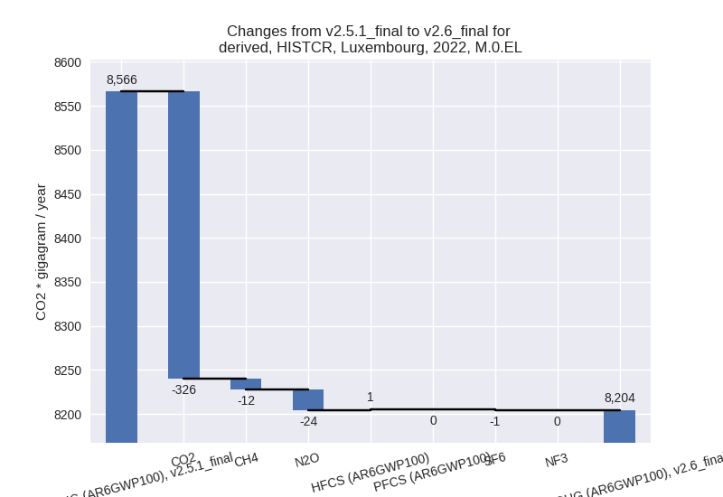
1990-2022
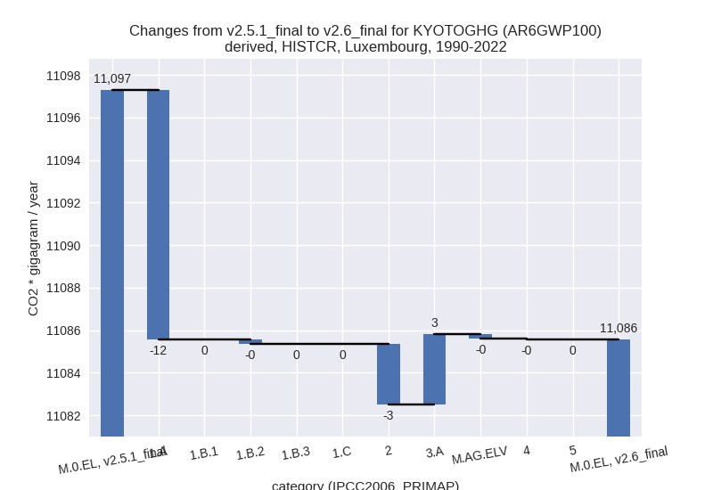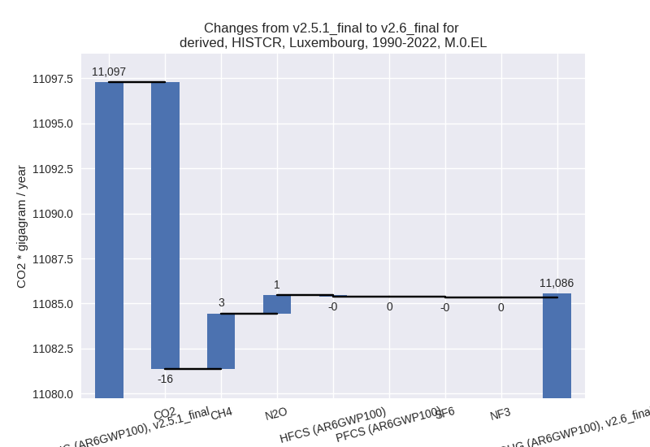
third party scenario
2022
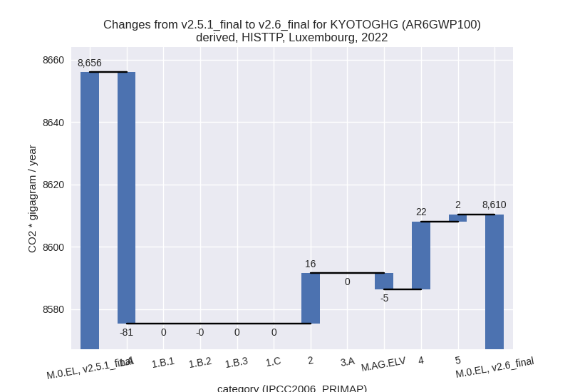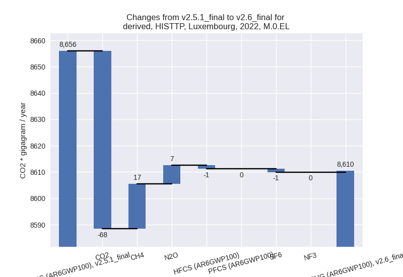
1990-2022
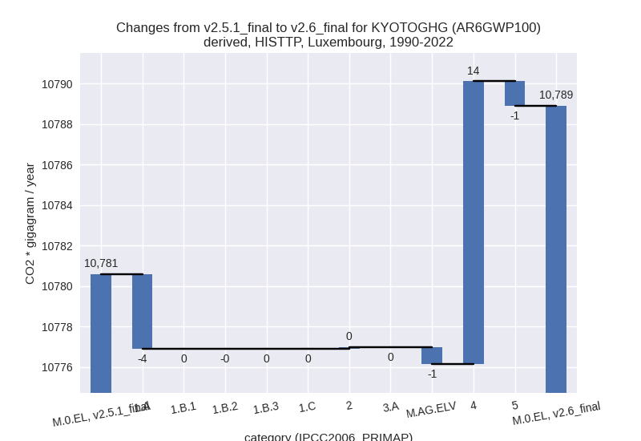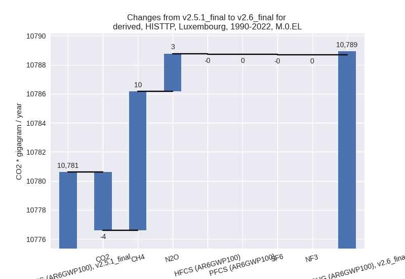
Detailed changes for the
scenarios:
country reported scenario
(HISTCR):
Most important changes
per time frame
For 2022 the following sector-gas combinations have
the highest absolute impact on national total KyotoGHG (AR6GWP100)
emissions in 2022 (top 5):
- 1: 1.A, CO2 with -305.52 Gg CO2 / year (-4.3%)
- 2: M.AG.ELV, N2O with -23.55 Gg CO2 / year (-16.6%)
- 3: 2, CO2 with -15.66 Gg CO2 / year (-3.2%)
- 4: 1.B.2, CH4 with -7.49 Gg CO2 / year (-22.2%)
- 5: M.AG.ELV, CO2 with -5.22 Gg CO2 / year (-34.0%)
For 1990-2022 the following sector-gas combinations
have the highest absolute impact on national total KyotoGHG (AR6GWP100)
emissions in 1990-2022 (top 5):
- 1: 1.A, CO2 with -12.13 Gg CO2 / year (-0.1%)
- 2: 3.A, CH4 with 3.31 Gg CO2 / year (0.7%)
- 3: 2, CO2 with -2.94 Gg CO2 / year (-0.4%)
- 4: M.AG.ELV, CO2 with -0.85 Gg CO2 / year (-9.3%)
- 5: M.AG.ELV, N2O with 0.64 Gg CO2 / year (0.4%)
Changes in the main sectors for aggregate KyotoGHG (AR6GWP100)
are
- 1: Total sectoral emissions in 2022 are 6908.71 Gg
CO2 / year which is 84.2% of M.0.EL emissions. 2022 Emissions have
changed by -4.3% (-310.13 Gg CO2 /
year). 1990-2022 Emissions have changed by -0.1% (-11.94 Gg CO2 / year). For 2022 the
changes per gas
are:
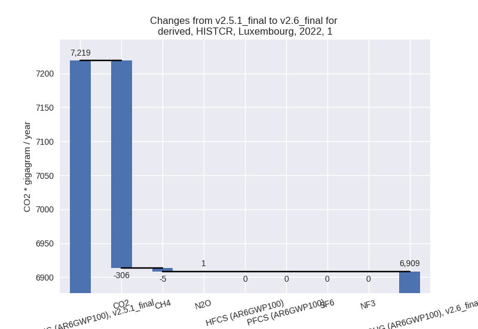
The changes come from the following subsectors:
- 1.A: Total sectoral emissions in 2022 are 6882.42
Gg CO2 / year which is 99.6% of category 1 emissions. 2022 Emissions
have changed by -4.2% (-302.64 Gg
CO2 / year). 1990-2022 Emissions have changed by -0.1% (-11.71 Gg CO2 / year). For 2022 the
changes per gas
are:
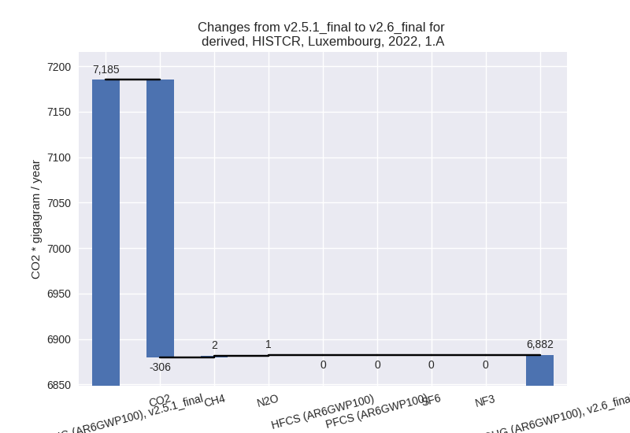
There is no subsector information available in PRIMAP-hist.
- 1.B.2: Total sectoral emissions in 2022 are 26.29
Gg CO2 / year which is 0.4% of category 1 emissions. 2022 Emissions have
changed by -22.2% (-7.49 Gg CO2 /
year). 1990-2022 Emissions have changed by -0.6% (-0.23 Gg CO2 / year). For 2022 the
changes per gas
are:
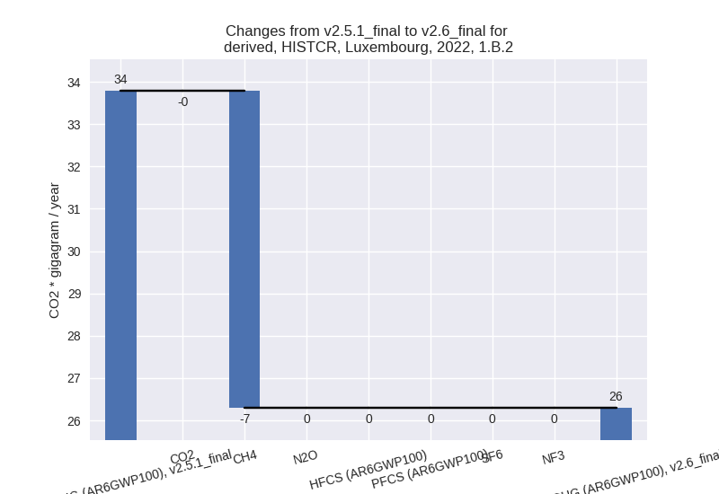
There is no subsector information available in PRIMAP-hist.
- 2: Total sectoral emissions in 2022 are 543.29 Gg
CO2 / year which is 6.6% of M.0.EL emissions. 2022 Emissions have
changed by -2.8% (-15.45 Gg CO2 /
year). 1990-2022 Emissions have changed by -0.3% (-2.85 Gg CO2 / year). For 2022 the
changes per gas
are:
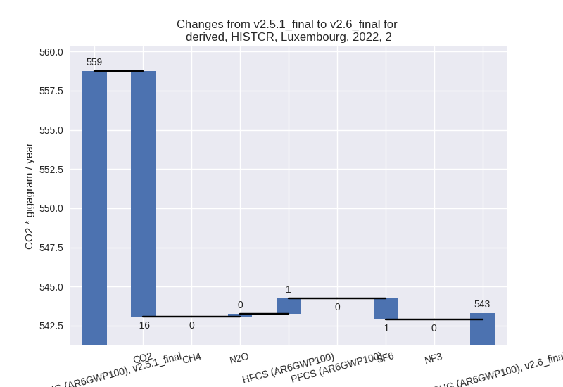
- M.AG: Total sectoral emissions in 2022 are 667.80
Gg CO2 / year which is 8.1% of M.0.EL emissions. 2022 Emissions have
changed by -4.8% (-33.33 Gg CO2 /
year). 1990-2022 Emissions have changed by 0.5% (3.10 Gg CO2 / year). For 2022 the
changes per gas
are:
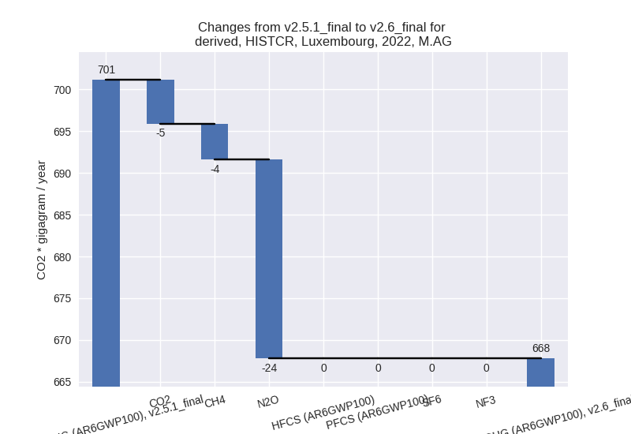
The changes come from the following subsectors:
- 3.A: Total sectoral emissions in 2022 are 539.25 Gg
CO2 / year which is 80.8% of category M.AG emissions. 2022 Emissions
have changed by -0.8% (-4.57 Gg CO2
/ year). 1990-2022 Emissions have changed by 0.6% (3.31 Gg CO2 / year).
- M.AG.ELV: Total sectoral emissions in 2022 are
128.55 Gg CO2 / year which is 19.2% of category M.AG emissions. 2022
Emissions have changed by -18.3%
(-28.77 Gg CO2 / year). 1990-2022 Emissions have changed by -0.1% (-0.21 Gg CO2 / year). For 2022 the
changes per gas
are:
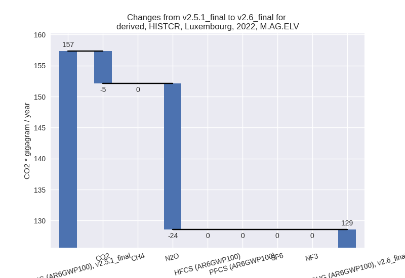
There is no subsector information available in PRIMAP-hist.
- 4: Total sectoral emissions in 2022 are 84.57 Gg
CO2 / year which is 1.0% of M.0.EL emissions. 2022 Emissions have
changed by -3.4% (-2.95 Gg CO2 /
year). 1990-2022 Emissions have changed by -0.0% (-0.04 Gg CO2 / year). For 2022 the
changes per gas
are:
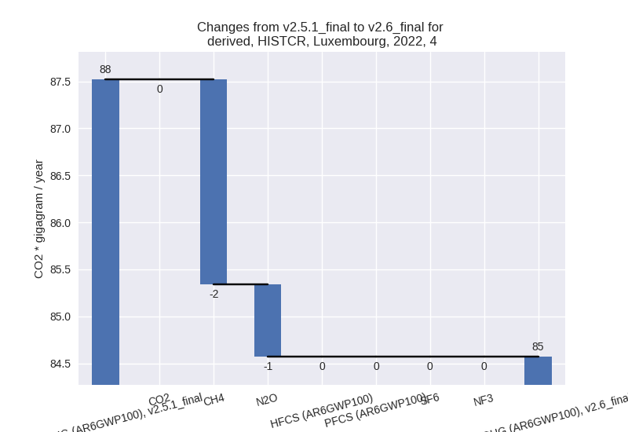
- 5: No data
third party scenario (HISTTP):
Most important changes
per time frame
For 2022 the following sector-gas combinations have
the highest absolute impact on national total KyotoGHG (AR6GWP100)
emissions in 2022 (top 5):
- 1: 1.A, CO2 with -80.62 Gg CO2 / year (-1.1%)
- 2: 2, CO2 with 18.30 Gg CO2 / year (4.2%)
- 3: 4, CH4 with 16.99 Gg CO2 / year (36.2%)
- 4: M.AG.ELV, CO2 with -5.22 Gg CO2 / year (-34.0%)
- 5: 4, N2O with 4.76 Gg CO2 / year (38.4%)
For 1990-2022 the following sector-gas combinations
have the highest absolute impact on national total KyotoGHG (AR6GWP100)
emissions in 1990-2022 (top 5):
- 1: 4, CH4 with 10.18 Gg CO2 / year (9.9%)
- 2: 4, N2O with 3.81 Gg CO2 / year (37.0%)
- 3: 1.A, CO2 with -3.71 Gg CO2 / year (-0.0%)
- 4: 5, N2O with -1.21 Gg CO2 / year (-2.3%)
- 5: M.AG.ELV, CO2 with -0.85 Gg CO2 / year (-9.3%)
Changes in the main sectors for aggregate KyotoGHG (AR6GWP100)
are
- 1: Total sectoral emissions in 2022 are 7317.69 Gg
CO2 / year which is 85.0% of M.0.EL emissions. 2022 Emissions have
changed by -1.1% (-80.62 Gg CO2 /
year). 1990-2022 Emissions have changed by -0.0% (-3.71 Gg CO2 / year).
- 2: Total sectoral emissions in 2022 are 524.36 Gg
CO2 / year which is 6.1% of M.0.EL emissions. 2022 Emissions have
changed by 3.2% (16.23 Gg CO2 /
year). 1990-2022 Emissions have changed by 0.0% (0.11 Gg CO2 / year). For 2022 the
changes per gas
are:
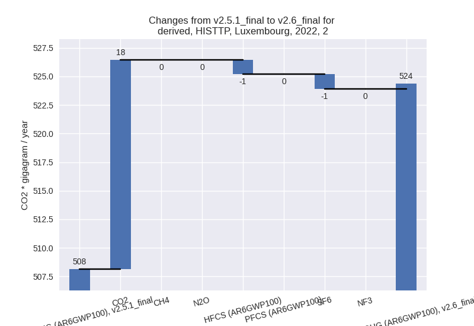
- M.AG: Total sectoral emissions in 2022 are 669.49
Gg CO2 / year which is 7.8% of M.0.EL emissions. 2022 Emissions have
changed by -0.8% (-5.22 Gg CO2 /
year). 1990-2022 Emissions have changed by -0.1% (-0.85 Gg CO2 / year).
- 4: Total sectoral emissions in 2022 are 81.10 Gg
CO2 / year which is 0.9% of M.0.EL emissions. 2022 Emissions have
changed by 36.6% (21.74 Gg CO2 /
year). 1990-2022 Emissions have changed by 12.4% (13.99 Gg CO2 / year). For 2022 the
changes per gas
are:
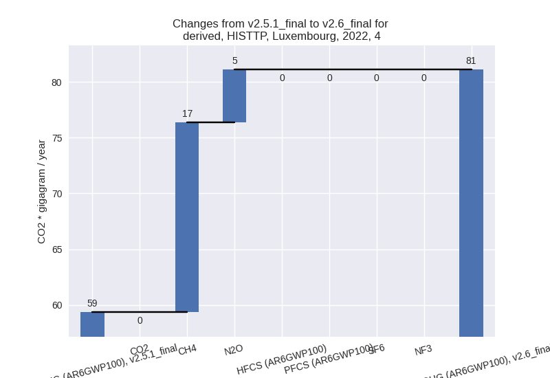
For 1990-2022 the changes per gas
are:
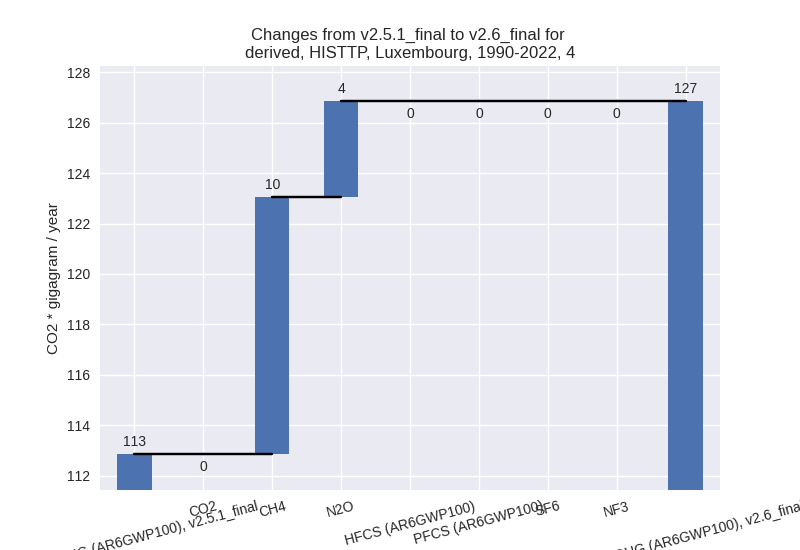
- 5: Total sectoral emissions in 2022 are 17.79 Gg
CO2 / year which is 0.2% of M.0.EL emissions. 2022 Emissions have
changed by 15.1% (2.33 Gg CO2 /
year). 1990-2022 Emissions have changed by -2.3% (-1.21 Gg CO2 / year). For 2022 the
changes per gas
are:
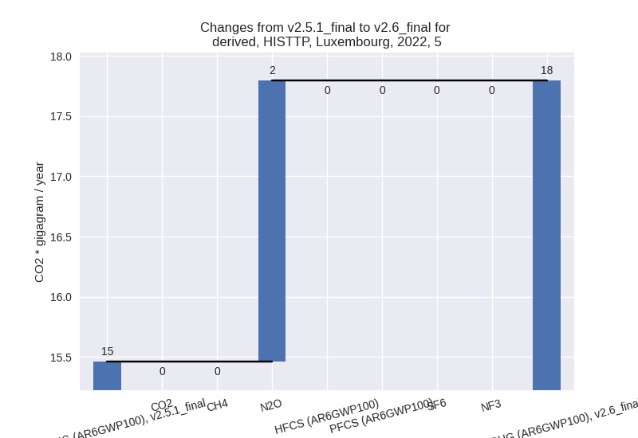
For 1990-2022 the changes per gas
are:
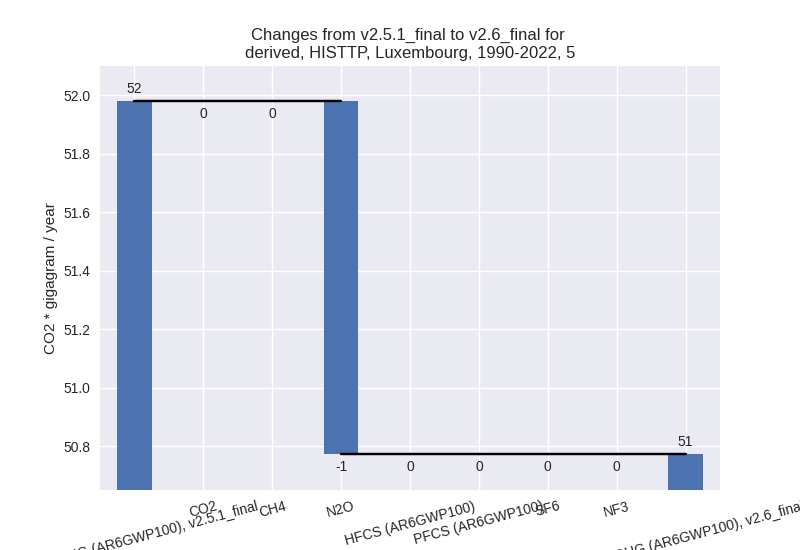